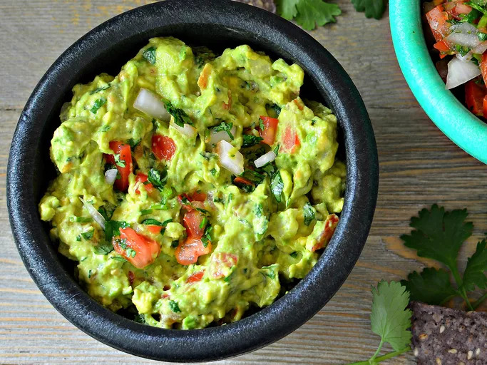

Guacamole

Description
Guacamole is an avocado-based dip or spread that originated in Mexico. It's typically made with mashed avocado and lime juice, then seasoned with salt and cilantro. Guacamole often contains tomatoes and onions.
Ingredients
- 3 avocados - peeled, pitted, and mashed
- 1 lime, juiced
- 1 teaspoon salt
- 2 roma (plum) tomatoes, diced
- ½ cup diced onion
- 3 tablespoons chopped fresh cilantro
- 1 teaspoon minced garlic
- 1 pinch ground cayenne pepper (Optional)
Steps
- Mash avocados, lime juice, and salt together in a medium bowl
- Mix in tomatoes, onion, cilantro, and garlic
- Stir in cayenne pepper
- Serve immediately, or cover and refrigerate for 1 hour for improved flavor